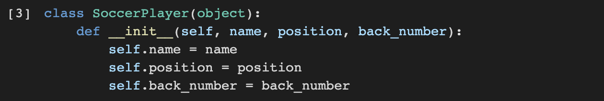
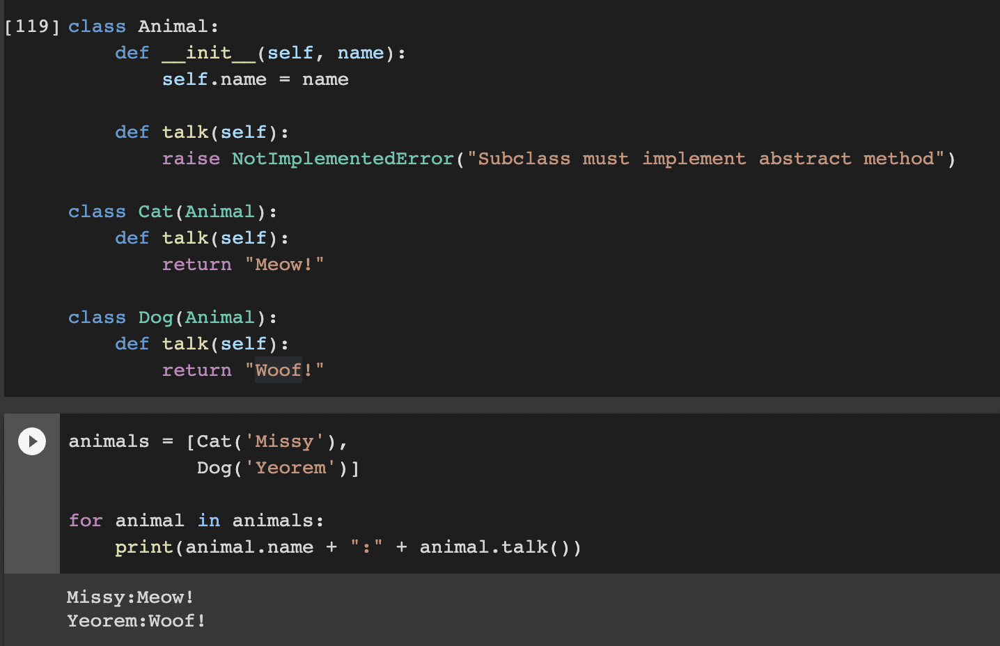
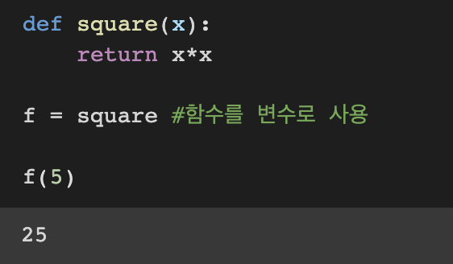

파이썬은object oriented programming, 즉 객체 지향 프로그레밍 언어이다
.[클래스와 객체 - 객체 지향 언어의 이해]
Ex) 수강신청 프로그램을 작성하기 위해선 어떻게 해야할까?
1. 수강신청의 시작부터 끝까지 순서대로 작성
2. 수강신청 관련 주체들(교수, 학생, 관리자)의 행동(수강신청, 과목 입력)과 데이터(수강과목, 강의 과목)들을 중심으로 프로그램 작성 후 연결
=>현재는 2번 방식이 주류이며, 이러한 기법을 객체 지향 프로그램이라 합니다.
객체란 속성(Attribute)와 행동(Action)을 가지는 것이며 OOP는 이러한 객체 개념을 프로그램으로써 표현하는 것으로써, 속성은 변수(Variable), 행동은 함수(Method)로 표현
예) 인공지능 축구 프로그램을 작성한다고 가정
객체: 팀, 선수, 심판, 공
Action : 선수 -공을 차다, 패스하다. / 심판 - 휘슬을 불다, 경고를 주다
Attribute : 선수 - 선수 이름, 포지션, 소속팀 / 팀 - 팀이름, 팀 연고지 , 팀소속 선수 등
[파이썬에서 Class 구현하기]
<변수와 Class 명 함수명 짓는 방법이 존재>
snake_case: 띄어쓰기 부분에 _를 추가 , 뱀처럼 늘여쓰기, 파이썬 함수/변수명에 사용
CamelCase: 띄어쓰기 부분에 대문자, 낙타의 등 모양, 파이썬 Class명에 사용
Attribute 의 추가는 필히 __init__, self와 함께 사용해야하며, __init__ 은 객체 초기화 예약 함수

<파이썬에서의 __ 의 의미>
특수한 예약 함수나 변수 그리고 함수명 변경(맨글링)으로 사용
ex) __main__, __add__, __str__, __eq__

method(Action) 추가는 기존함수와 같으나, 반드시 self 를 추가해야만 class 함수로 인정됩니다.
Self는 생성된 instance를 의미.

위의 경우 클래스 지정
son = SoccerPlayer("son", "FW", 7)
위의 instance를 지정하면 위 클래스에서 self는 son이 됩니다.
따라서 self.name = name을 son.name = name의 코드로 이해 가능
[OOP Implementation Example]
<구현 가능한 OOP 만들기 - 노트북>
조건
-Note를 정리하는 프로그램
-사용자는 Note에 뭔가를 적을 수 있다.
-Note에는 Content(=str type)가 있고 내용을 제거(remove)할 수 있다.
-두개의 노트북을 합쳐 하나로 만들 수 있다. (Note + Note = New Note)
-Note는 Notebook에 삽입된다.
-Notebook 은 Note가 삽입 될 때 페이지(Attribute)를 생성하며, 최고 300페이지까지 저장 가능하다.
-300페이지가 넘으면 더이상 노트를 삽입하지 못한다.


객체 지향 언어의 가장 큰 특징은 실제 세상을 모델링 한다는 것
그를 위해 필요한 세 가지 요소
Inheritance(상속) , Polymorphism(다형성) , Visibility(가시성)
[Inheritance(상속)]
부모클래스로 부터 속성과 Method를 물려받은 자식 클래스를 생성하는 것

class Korean 은 부모클래스인 class Person을 상속받습니다.

[Polymorphism(다형성)]
-같은 이름 메소드의 내부 로직을 다르게 작성하는 것 , 상속을 하거나 다르게 쓰일 수 있다.

[Visibility (가속성)]
누구나 객체 안에 모든 변수를 볼 필요가 없기때문에 객체의 정보를 볼 수 있는 레벨을 조절할 필요가 있다 .
[Encapsulation (캠슐화)]
-캡술화 또는 정보 은닉
[Example]
-Product 객체를 Inventory 객체에 추가
-Inventory에는 오직 Product 객체만 들어감
-Inventory에 Product 가 몇 개인지 확인이 필요
-Inventory에 Product items는 직접 접근이 불가
↑ Product 외에 다른 형태도 접근 가능 / item 앞에 __를 사용하여 __item으로 변경
__item을 통해 item에 대한 접근 불가능 확인 (Private 변수로 선언 타객체가 접근 못함)
이럴 경우 itmes 에 접근을 허용할 수 있는 방법이 있음
내부에서 접근이 가능하도록 반환
decorator(@property) 를 추가, my_inventory.items.append는 접근이 가능하나 my_inventory.__items.append는 접근이 불가 중요:@property 역할은 내부에 있는 객체에 접근할 수 있게 하는 것
[decorate]
-변수나 데이터 구조 모두에 할당이 가능한 객체
-파라메터로 전달이 가능하고 리턴 값으로도 사용
"파이썬의 모든 함수는 일급함수"

[내재함수 (Inner function)]
함수 안에 또다른 함수, print_msg("Hello, Python")에서 "Hello, Python"이 함수 print_msg의 msg로 들어가며,
-closure : inner function 을 return값으로 반환
[closure example]
-draw(rectangle) , draw(circle) -> 이처럼, 함수 명은 같지만 안의 인터페이스와 코드에 따라 코드를 다르게 짤 수 있는 것을 의미
-개념적으론 같은 일을 하지만 세부적으론 다르게 구현하는 것
-Dynamic Typing 특성으로 인해 파이썬에서는 같은 부모클래스의 상속에서 주로 발생
1) 객체를 사용하는 사용자가 임의로 정보 수정
2) 필요 없는 정보에는 접근 할 필요가 없음
- Class 를 설계할 때 클래스 간 간섭, 정보공유의 최소화
- 심판 클래스가 축구선수 클래스 가족 정보를 알아야 할 필요는 없음
-캡슐을 던지듯, 인터페이스만 알아서 써야함


first-class objects

함수 print_msg 안의 함수 printer을 통해 print(msg) = print("Hello, Python")이 출력


*모든 내용과 모든 설명 및 관련 자료의 출처는 네이버 부스트코스의 <[부스트캠프 AI Tech 3기] Pre-Course>입니다.*
[부스트캠프 AI Tech 3기] Pre-Course